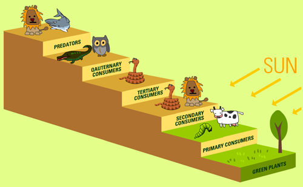

På denna sida kan du hitta fakta om tre olika rovdjur som lever i Sverige.
Om vi inte skulle haft några rovdjur
I naturen lever allt efter ett hierarkiskt system som kallas näringskedjan. I näringskedjan är rovdjuren toppkonsumenter, växtätarna förstahandskonsument och växterna är producenter. När näringskedjan blir påverkat negativt under en längre tidsperiod kan en top-down-effekten triggas igång/// sättas igång. Top-down-effekten kan förklaras som att, när vegetation och ekosystemet slutar fungera på grund av att en beståndsdel i den inte fungera. Om till exempel en förstahandskonsument ökar kraftigt över ett visst område, kan producenterna inte hinna utbredda sig i samma takt. Det i sin tur kan leda till att den biologiska mångfalden i hela det området kan minska drastiskt. Ett annat perspektiv man kan se detta ifrån är om konsumenterna skulle vara påväg att bli utrotade. Då skulle förstahandskonsumenter bli kapabla till att föröka sig utan några hot, flera lever längre samt mängden ökar inom den arten. Det får efterföljden att den biologiska mångfalden ska räckas till flera förstahandskonsumenter, som inte funkar eftersom den biologiska mångfalden räcker till en viss mängd, samt ska räcka till andra arter som är förstahandskonsumenter.